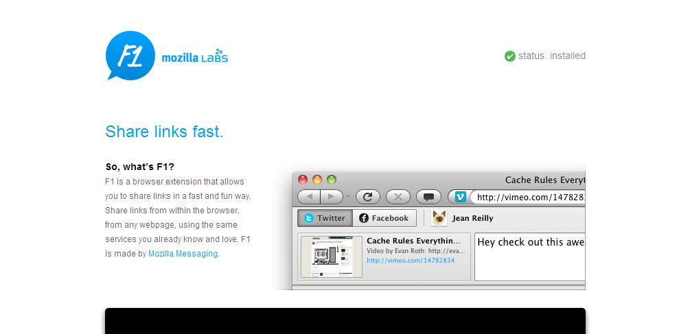
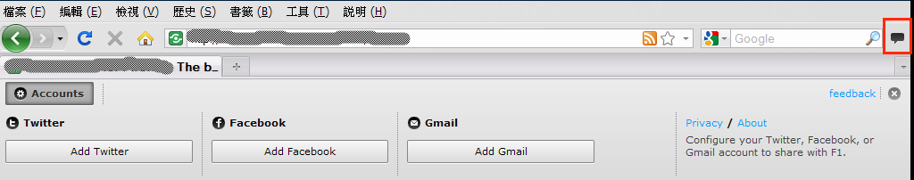
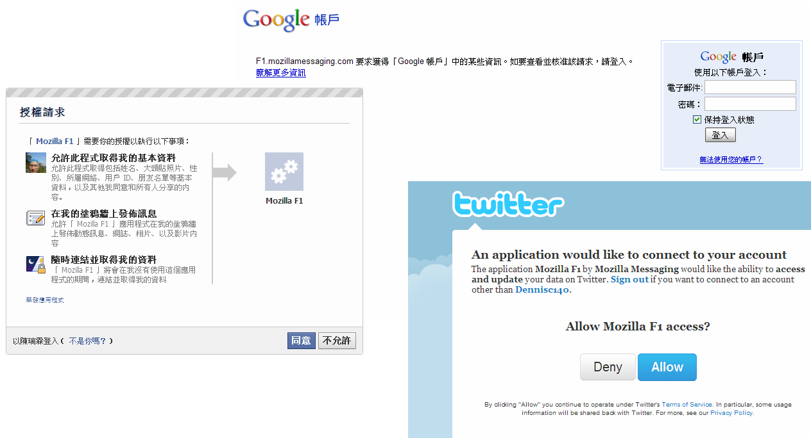
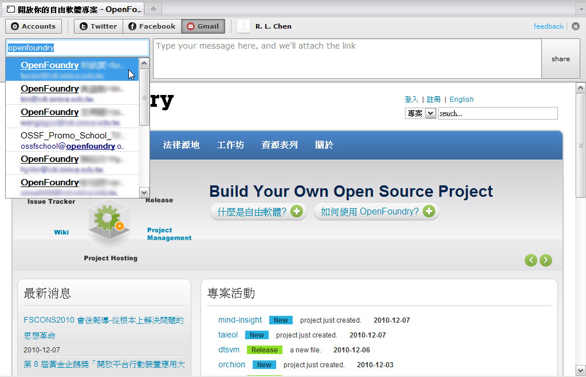
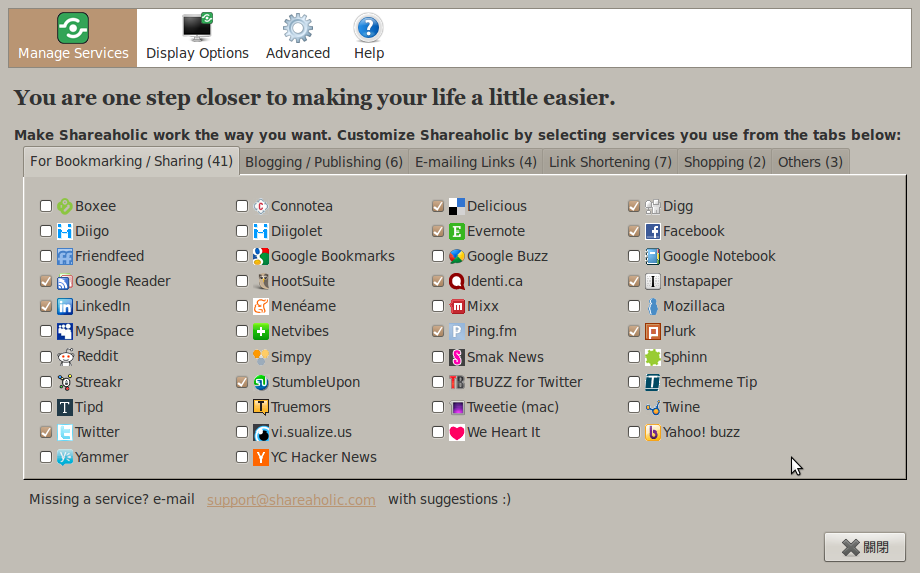
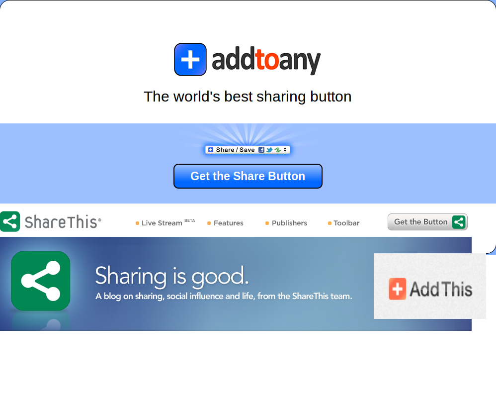

試用報告：Mozilla 讓你快速發布好站連結到微網誌

Mozilla Lab 日前推出社群分享套件 F1，讓使用者能透過一個小按鈕分享網站連結給好友們。目前 F1 已經可以支援 Twitter、Facebook 以及 Gmail 等資訊平台。由於該套件為自由軟體，使用者可自行修改程式原始碼，相信在不久的將來，此一套件軟體在網路社群的改寫下，將會呈現更活潑而豐富的進階功能。

▲Mozilla F1 的官方功能介紹
功能介紹

▲安裝 F1 套件後，會在右側出現一個小按鈕。目前能夠分享到三項服務－Twitter、Facebook 及 Gmail。
第一次使用 F1 必須連結使用者的帳號，而且服務平台需要取得使用者的個人資料。根據 Mozilla 的說法，F1 使用的個資是為了增進使用者在使用上的方便，統計各項服務的使用人數，以及改進套件的設計。以 Gmail 為例，像是輸入寄件者時會依據 Gmail 通訊錄，自動跑出可能要寄送的郵件帳號，此時便需要讓 F1 取得使用者 Google 帳號的授權。F1 有隱私權聲明政策以保障使用者的權利。但如使用上仍有疑慮，那唯一的解決方式就是先避免使用 F1 套件這類型的進階服務了。而使用者在第一次將帳號與 F1 公佈連結之後，未來在使用上就不用像第一次執行那麼多步驟，在第一次啟用之後直接選擇欲分享的平台並按下分享即可。

▲Facebook 的授權畫面，登入 Gmail 的畫面，以及twitter授權。

▲Gmail 的分享的操作畫面
台灣地區微網誌使用人數最多的是 Plurk 噗浪，很可惜目前 F1 並沒支援分享到噗浪的功能。但是由於 F1的程式碼與 Plurk 網站的 API 是開放的，假如有人寫出分享到噗浪的功能，有朝一日就能直接利用 F1 噗出網站資訊到 Plurk 了。
老實說，Mozilla 推出 F1 套件的行為一點也算不上創舉，很多網路服務平台老早就有類似的服務，並且分享發佈的平台遠多於 F1 目前提供的 3 個平台。目前應用在 Firefox 瀏覽器上的套件已經有 Shareaholic 的存在，這個套件提供微網誌分享、部落格分享、縮網址服務、電子郵件發佈等多項服務。

▲Shareaholic 套件功能與 F1 功能類似，但提供更多樣的分享平台。
對於網站內容提供者，Mozilla 也釋出還在實驗階段的 API navigator object 元件，讓逛網站的人能夠將網站連結發佈到分享平台。但與 F1 的處境差不多，很多的網路服務平台都已經有類似功能讓使用者使用，像是 Addthis、Addtoany、ShareThis 等等。

▲有多家網站提供整合性的分享按鈕，讓讀者想分享網站連結資訊到哪個平台就分享到哪個平台。
根據 Mozilla 的規畫，未來使用 F1，希望能夠加入使用者慣用的分享網站資訊。對於各分享平台網站來說，就得想辦法宣傳，讓使用者能夠把自家網站加入 F1 的慣用清單裡。Mozilla 可能意在透過 F1 建立分享標準，就像是 OpenSearch 之於瀏覽器中的搜尋引擎列 ，但其提供的功能已非獨家特賣，未來是否能順利擴散發展，仍有待時間的證明與考驗。
延伸閱讀：
Mozilla F1 推出，新方式分享連結
Mozilla Launches F1, a New Way to Share Links
https://mashable.com/2010/11/10/mozilla-f1/
Mozilla 推出 F1 分享按鈕，一個打全部！
Mozilla launches the F1 share button, as in “one to rule them all”
https://thenextweb.com/socialmedia/2010/11/10/mozilla-launches-the-f1-share-button-as-in-one-to-rule-them-all/
用Mozilla Labs F1 社交瀏覽 - RockMelt 應該呈現的樣子
Social browsing with Mozilla Labs F1 -- how RockMelt should've been
https://www.downloadsquad.com/2010/11/10/social-browsing-with-mozilla-labs-f1-how-rockmelt-shouldve-b/
Mozilla plugin 簡化Facebook、Twitter、Gmail上的分享體驗
Mozilla's F1 plugin streamlines Facebook, Twitter, Gmail sharing experience
https://www.tweaktown.com/news/17502/mozilla_s_f1_plugin_streamlines_facebook_twitter_gmail_sharing_experience/